A lot of buses are being cancelled in Auckland at the moment. This is partly due to Covid, but also due to difficulty in recruiting bus drivers because of poor pay and conditions. And probably other reasons, too.
I’ve put about six weeks of daily cancellation data in a Github gist
Here’s a default graph:
d<-read.table("https://gist.githubusercontent.com/tslumley/9ac8df14309ecc5936183de84b57c987/raw/9ebf665b2ff9a93c1dbc73caf5ff346909899827/busdata.txt",header=TRUE)
d$date<-as.Date(paste(2022, d$mo, d$d,sep="-"))
plot(cancels~date, data=d)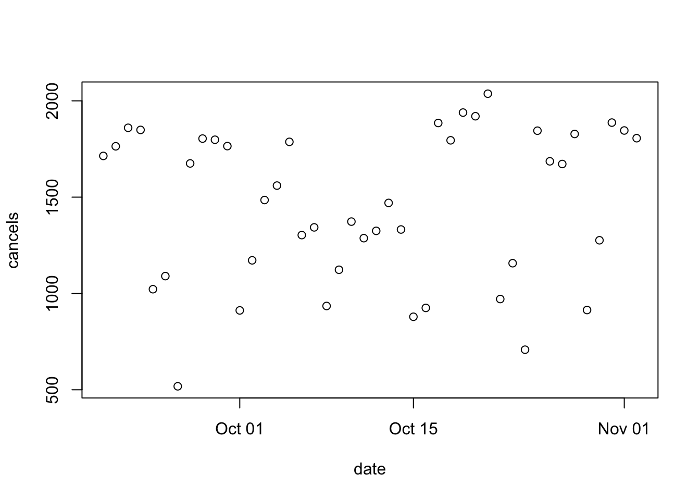
There are a lot of cancellations, but otherwise it’s not all that clear.
Just adjusting the aspect ratio helps; you can kind of see the weekday/weekend distinction
plot(cancels~date, data=d)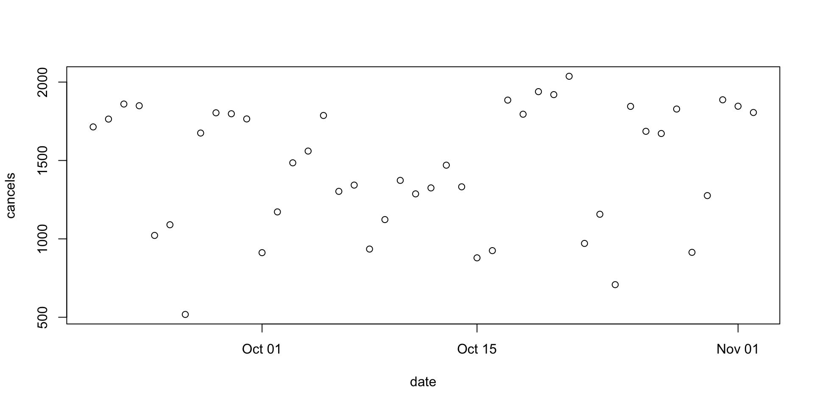
We can try fiddling with the plotting style
plot(cancels~date, data=d, type="h")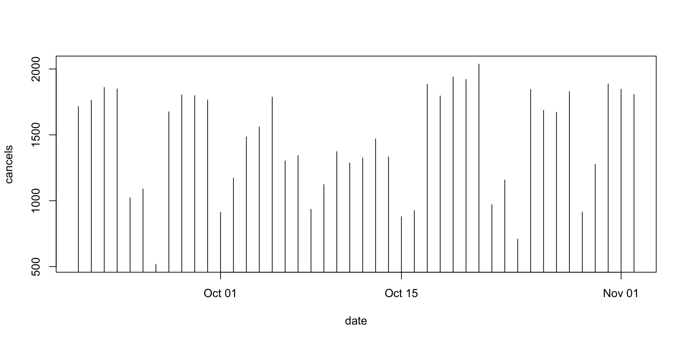
plot(cancels~date, data=d, type="l")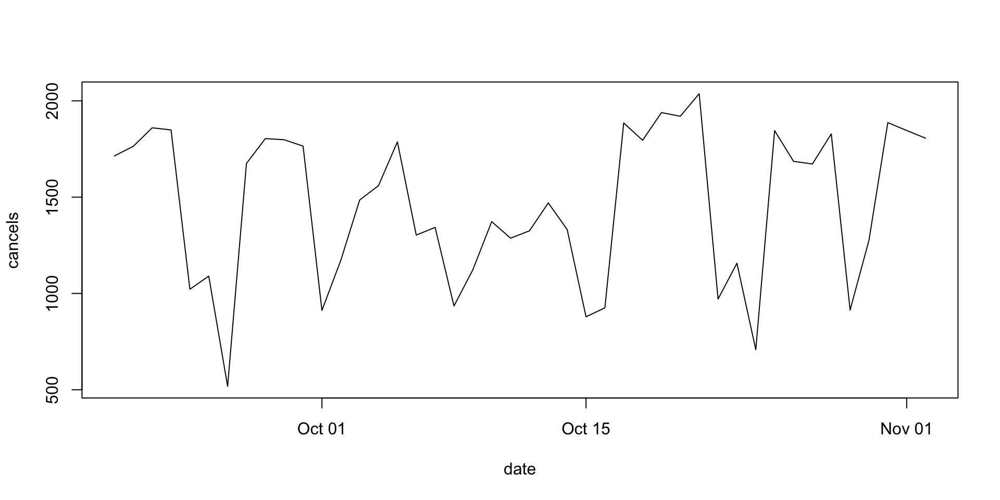
plot(cancels~date, data=d, type="o")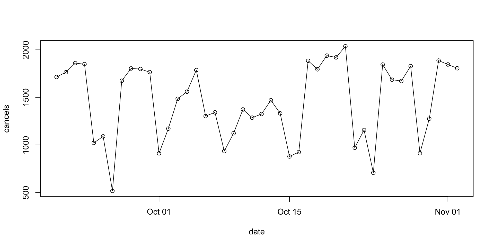
plot(cancels~date, data=d, type="o",lty=2)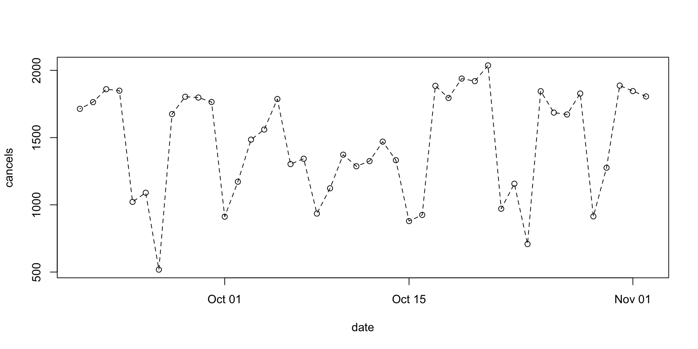
I think the last one is the best, but the weekday/weekend distinction isn’t that clear
d$weekend<-with(d, weekdays(d$date) %in% c("Saturday","Sunday"))
plot(cancels~date, data=d, type="o",col=1+weekend,lty=2)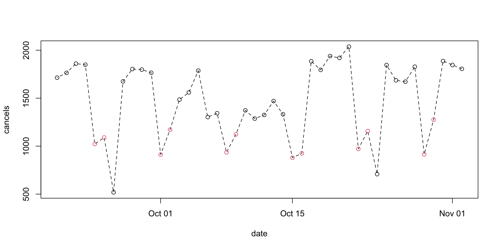
plot(cancels~date, data=d,col=1+weekend,lty=2)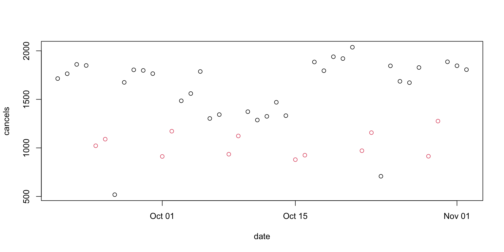
plot(cancels~date, data=d,col=1+weekend,lty=2,pch=19)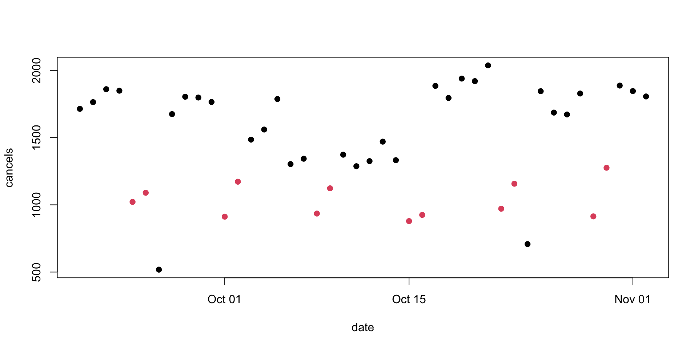
The rationale for open circles as a plotting default was that they handle overlaps better, which isn’t an issue here.
There are now two very obvious weekdays with very low cancellation counts. These, it turns out, are holidays: the memorial day for Queen Elizabeth II, and Labour Day. They should probably be coded together with weekends
d$workday<- with(d, !(weekdays(date) %in% c("Saturday","Sunday")))
d$workday[d$day==24 & d$mo==10]<-FALSE
d$workday[d$day==26 & d$mo==9]<-FALSE
plot(cancels~date, data=d,col=1+workday,lty=2,pch=19)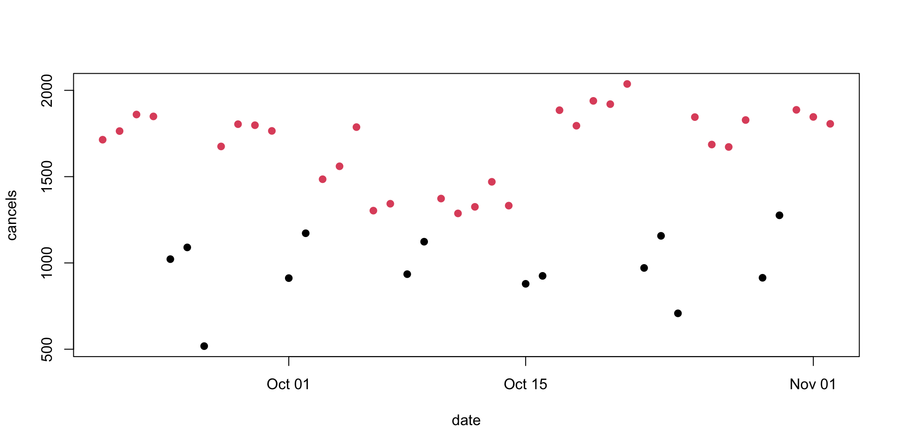
plot(cancels~date, data=d,col=4-2*workday,lty=2,pch=19)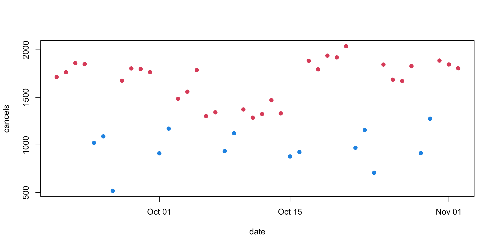
A legend is helpful, and if you might be posting the graph to Twitter it’s good to make sure the background isn’t transparent
par(bg="floralwhite")
plot(cancels~date,data=d,pch=19, col=4-2*workday,ylim=c(200,2100),xlab="",ylab="Cancelled trips")
legend("bottomright",pch=20, col=c(2,4), legend=c("Working day","weekend/holiday"),bty="n",ncol=2)
title(main="Auckland bus cancellations")It would be easier to see trends with connecting lines, but they’d need to be separate for workdays and non-workdays because the colours are different. This code is a bit of a hack and I should use proper conditional statements, but this is how I actually did it. It relies on FALSE/FALSE being NaN and being skipped by lines
par(bg="floralwhite")
plot(cancels~date,data=d,pch=19, col=4-2*workday,ylim=c(200,2100),xlab="",ylab="Cancelled trips")
legend("bottomright",pch=20, col=c(2,4), legend=c("Working day","weekend/holiday"),bty="n",ncol=2)
title(main="Auckland bus cancellations")
with(d, lines(date,cancels*workday/workday, lty=2,col=2))
with(d, lines(date,cancels*weekend/weekend, lty=2,col=4))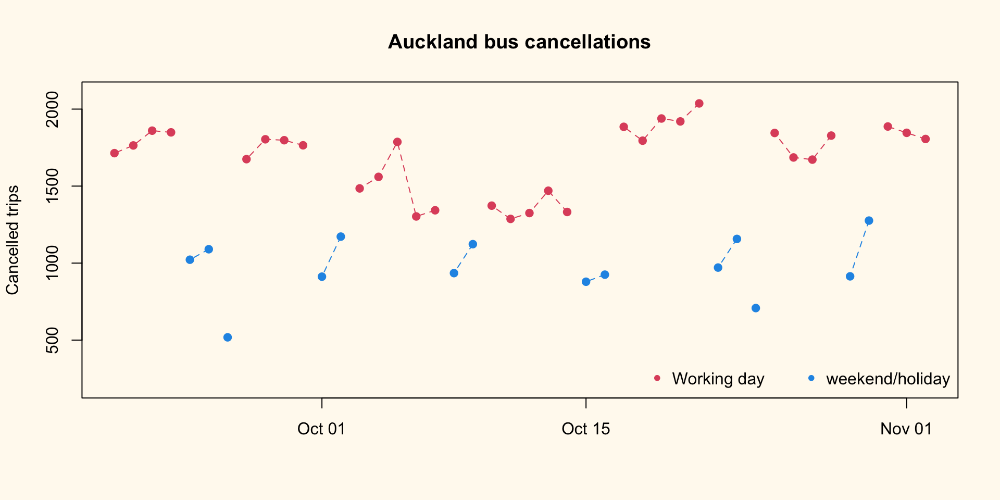
And, finally, labels for the two holidays:
par(bg="floralwhite")
plot(cancels~date,data=d,pch=19, col=4-2*workday,ylim=c(200,2100),xlab="",ylab="Cancelled trips")
legend("bottomright",pch=20, col=c(2,4), legend=c("Working day","weekend/holiday"),bty="n",ncol=2)
title(main="Auckland bus cancellations")
with(d, lines(date,cancels*workday/workday, lty=2,col=2))
with(d, lines(date,cancels*weekend/weekend, lty=2,col=4))
text(as.Date("2022-9-26"),518,adj=-0.2,"QEII Memorial",cex=0.9,col=4)
text(as.Date("2022-10-24"),708,adj=-0.2,"Labour Day",cex=0.9,col=4)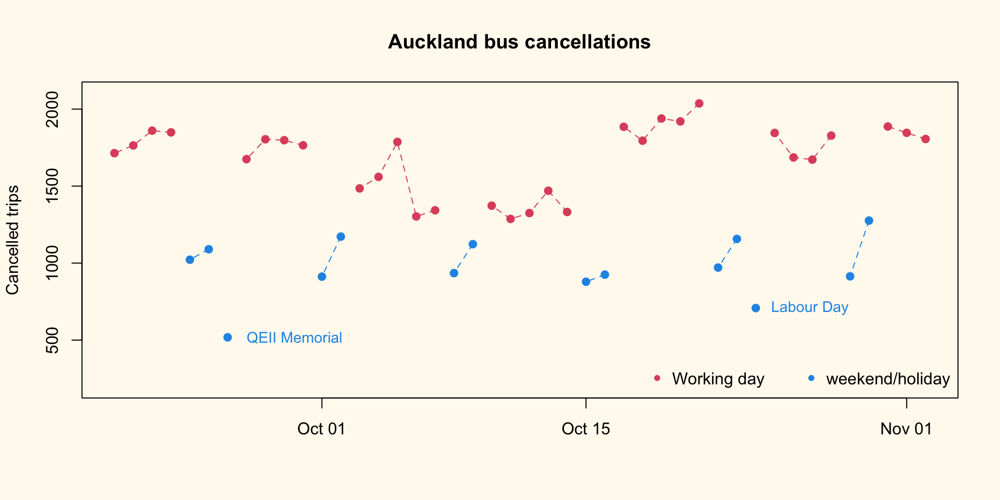
The colour for the point labels looks lighter than the colour for the point itself. This is an illusion coming from the lines in the letters being relatively thin. I tried to fix it, but getting the colour ‘right’ was hard so I gave up.
I extracted the totals from calendar.txt in the static GTFS data. I’m going to assume the holiday numbers were like Sunday, because I don’t want to mess around with the calendar adjustment features of GTFS right now.
totals<-c(Monday = 13933, Tuesday = 13945, Wednesday = 13934, Thursday = 13937,
Friday = 14087, Saturday = 9728, Sunday = 9378)
d$total<-totals[weekdays(d$date)]
d$total[!d$workday & !d$weekend]<-totals["Sunday"]
d$pct<- 100*with(d, cancels/total)
par(bg="floralwhite")
plot(pct~date,data=d,pch=19, col=4-2*workday,ylim=c(0,20),xlab="",ylab="% cancelled")
legend("bottomright",pch=20, col=c(2,4), legend=c("working day","weekend/holiday"),bty="n",ncol=2)
title(main="Auckland bus cancellations")
with(d, lines(date,pct*workday/workday, lty=2,col=2))
with(d, lines(date,pct*weekend/weekend, lty=2,col=4))
text(as.Date("2022-9-26"),100*518/9378,adj=-0.2,"QEII Memorial",cex=0.9,col=4)
text(as.Date("2022-10-24"),100* 708/9378,adj=-0.2,"Labour Day",cex=0.9,col=4)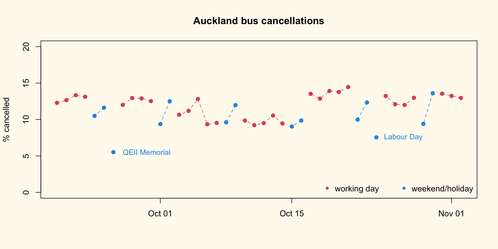
There’s a lower cancellation rate on Saturdays, but not clearly on Sundays.